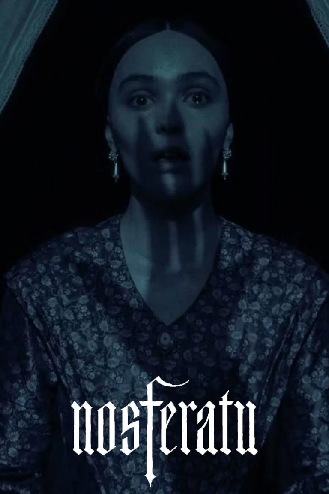

Фильм "Носферату" (2024г)
Недавно посмотрел новый фильм Роберта Эггерса "Носферату". Он является ремейком оригинального фильма 1922 года. На кинопоиске оценка 6,7 из 10, но челы просто не выкупили реально..
Очень сильно погружает атмосферу ужаса, который испытывали люди тех времен к потусторонней силе. Да и актеры играют весьма убедительно.